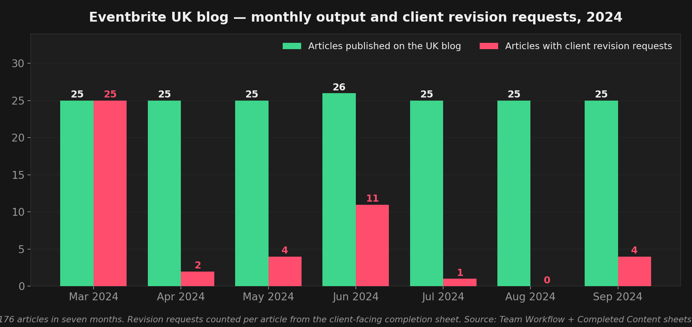
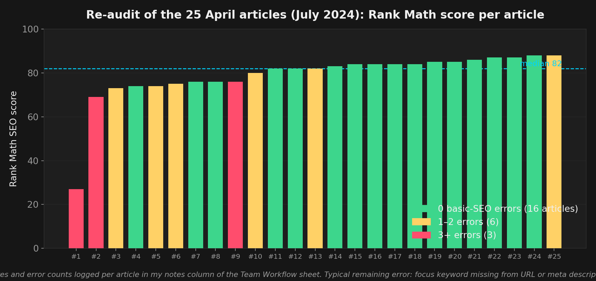

Kunde: Eventbrite, über die AS Marketing Agency (Hamburg, remote). Meine Rolle: Sr. Digital Marketing & WordPress Manager, März bis September 2024.
Auftrag: US-Blogartikel von Eventbrite für den UK-Blog lokalisieren und aktualisieren, 25 Artikel pro Monat inklusive Bilder, in einem Team-Workflow mit Textern, Bildbearbeitung, Projektleitung und dem Content-Team des Kunden.
Mein Anteil: die letzte Meile jedes Artikels: WordPress-Upload, Prüfung der US-zu-UK-Lokalisierung, Bilder und CTAs, Permalinks, hreflang-Tags, Rank-Math-SEO-Check und die Korrekturrunden nach der Kunden-QA.
Eventbrite veröffentlicht dieselben Ratgeber für mehrere Märkte. Der US-Blog bekommt neue Inhalte zuerst; der UK-Blog hing hinterher, mit älteren Versionen, US-Beispielen, Dollarpreisen und Links auf die .com-Seite. AS Marketing sollte diese Lücke schließen: 25 US-Artikel pro Monat, für britische Leser umgeschrieben und auf eventbrite.co.uk neu veröffentlicht.
Sechs Personen hatten jeden Artikel in der Hand: eine Texterin schrieb die UK-Fassung nach Content-Brief, eine zweite Person prüfte sie, eine Bildbearbeiterin lokalisierte Screenshots und Grafiken, ich baute die Seite in WordPress, die Projektleitung machte die Agentur-QA, und das Content-Team von Eventbrite machte die finale QA und veröffentlichte. Das gemeinsame Workflow-Sheet hatte eine Zeile pro Artikel und eine Spalte pro Übergabe, sodass jederzeit sichtbar war, wo welcher der 25 Beiträge hing.
| Schritt | Verantwortlich | Was passierte |
|---|---|---|
| 1. Planen | Projektleitung + Kunde | Keyword-Map für den Monat: welche US-Artikel lokalisiert, welche UK-Beiträge aufgefrischt werden, Fokus-Keyword und Suchvolumen pro Artikel, Freigabe durch Eventbrite. |
| 2. Briefen | Projektleitung | Content-Brief pro Artikel in Google Docs: Titel, Wortzahl, Themencluster, Ziel, Lokalisierungshinweise (UK-Beispiele, Preise in GBP, UK-Quellen). |
| 3. Text | Texterin, zweite Prüfung | UK-Entwurf geschrieben und geprüft; Bild-Brief angelegt, wenn US-Screenshots Dollarzeichen oder US-Schreibweise enthielten. |
| 4. Bilder | Bildbearbeitung | Lokalisierte oder neue Bilder im gemeinsamen Drive-Ordner, benannt pro Artikel. |
| 5. Bauen | Ich | Seite im WordPress des UK-Blogs gebaut: Text, Überschriften, Inhaltsverzeichnis, Bilder an den Positionen des US-Originals, CTAs im Text und am Ende mit UK-Links, Permalink laut Brief, Tags reduziert, Autor gesetzt. Rank-Math-Fokus-Keyword und Meta geprüft, hreflang gesetzt durch Verknüpfung des UK-Beitrags mit dem US-Original über die Post-ID. |
| 6. QA | Projektleitung, dann Eventbrite | Agentur-Qualitätscheck, dann Kunden-QA im gemeinsamen Sheet. Korrekturhinweise kamen pro Artikel zurück: CTA-Formulierung, fehlende Bilder, Formatierung, defekte Links. |
| 7. Korrigieren & indexieren | Ich | Gewünschte Änderungen umgesetzt, Live-URL eingetragen, Indexierung in der Google Search Console angefordert, Abschluss-Sheet für den Kunden aktualisiert. |

Die Korrekturhinweise aus dem März waren der wertvolle Teil. Sie waren konkret und wiederholten sich: den ersten von zwei CTAs entfernen, vor jeder Hauptüberschrift ein Bild einfügen, CTA-Beschriftungen klein schreiben, kein Punkt in der Bildunterschrift, US-Screenshots ersetzen. Aus dieser Liste habe ich eine Checkliste vor dem Upload gemacht und sie auf jeden Artikel angewendet, bevor er zum Kunden ging. Das ist die ganze Geschichte hinter dem Rückgang von 25 auf 0.

Rank Math ist ein Plugin-Score, kein Ranking. Ich habe ihn als Konsistenzschranke genutzt: Wenn 25 Artikel im Monat live gehen, ist eine günstige automatische Prüfung, dass jeder davon das Fokus-Keyword in Titel, URL, Meta-Description und erstem Absatz hat, mehr wert als eine sorgfältige manuelle Prüfung von dreien.
Ergebnis 1 — Bei 25 Artikeln im Monat schlägt Konsistenz Brillanz.
Kein einzelner Artikel war schwierig. 176 davon durch sechs Hände zu bringen, ohne einen zu verlieren, war die Aufgabe. Das gemeinsame Sheet mit einer Spalte pro Übergabe hat mehr für die Qualität getan als jede einzelne Korrektur.
Ergebnis 2 — Korrekturhinweise des Kunden sind eine kostenlose Spezifikation.
Die 25 Hinweis-Sets des ersten Monats enthielten vielleicht acht verschiedene Regeln. Einmal aufgeschrieben und vor dem Upload angewendet, haben sie die Korrekturrunde fast vollständig beseitigt.
Ergebnis 3 — Lokalisierung sind vor allem Links und Beispiele, nicht Wörter.
Die Schreibweise war der einfache Teil. Die eigentliche UK-Arbeit war das Ersetzen von US-Event-Beispielen, Dollarpreisen, US-only-Tools (Keela → NeonCRM), US-Downloads ohne UK-Entsprechung und jedes internen Links, der auf eventbrite.com zeigte.
Ergebnis 4 — Wissen, was man nicht behaupten kann.
Das SEO-Reporting und die Rankings lagen beim Team von Eventbrite. Ich hatte nie Zugriff auf die Search Console des UK-Blogs, deshalb zeigt diese Fallstudie Prozess- und Qualitätskennzahlen, keinen Traffic. Wo ich die Traffic-Daten habe, zeige ich sie: siehe die Fallstudie Tajaddawa.
Hinweis zu den Quellen
Die Zahlen stammen aus den Asana-Aufgaben des Projekts, dem Eventbrite-Team-Workflow-Sheet und dem kundenseitigen Abschluss-Sheet (März bis September 2024). Artikelzahlen sind Zeilen mit Live-URL, Korrekturzahlen sind Zeilen mit ausgefülltem Kunden-Hinweisfeld. Interne Keyword-Maps, Briefings und Teamnamen werden hier nicht wiedergegeben.